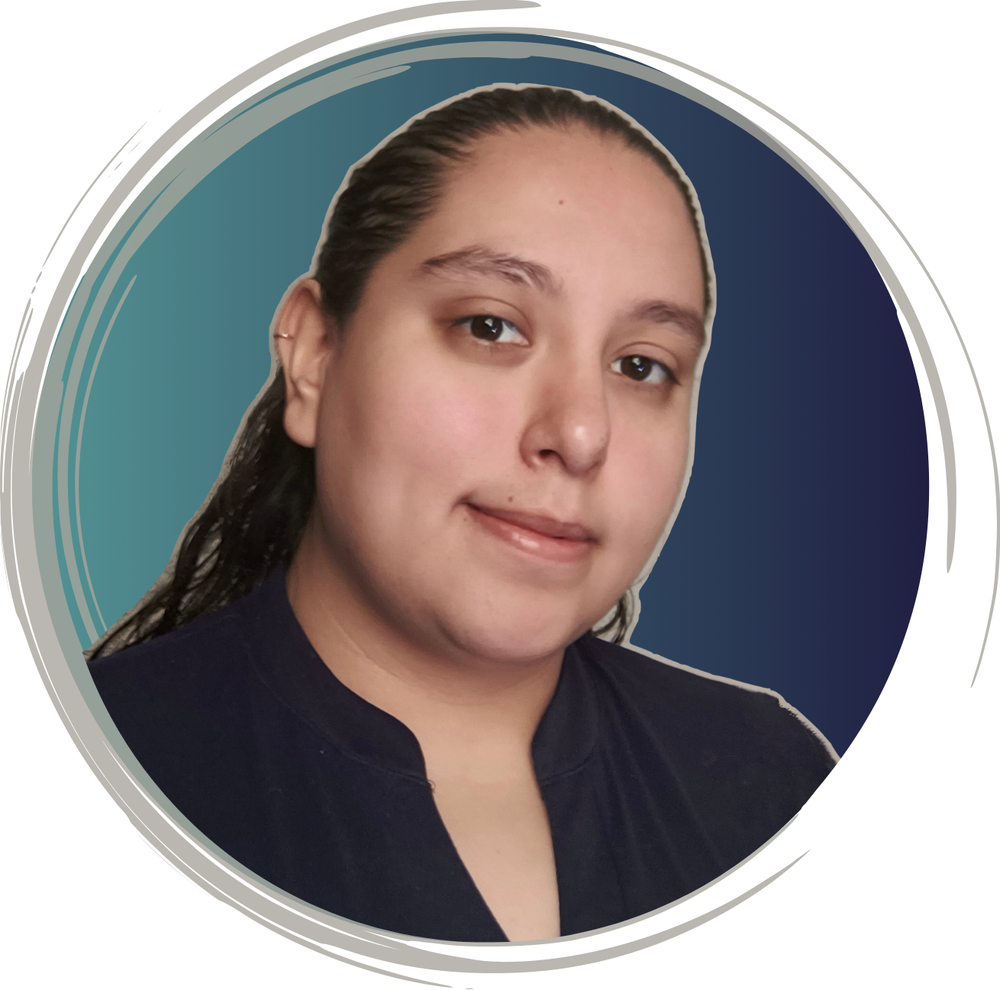

Hi! I am an engineer with a passion for software. Welcome to my resume web page!
I am committed to continuing my career with a positive attitude so that my accumulated expertise can be applied in order to keep tackling complex challenges within a well-established company.
I firmly believe that accepting new ideas and challenges with open-mindedness, teamwork, and effective communication are key aptitudes for efficiently meet objectives and establish strong and friendly workplace relationships. They have always been core principles to achieve both my personal and professional goals.
Universidad Autónoma de Querétaro | Grade: 8.87 | 2015-2019
Universidad Autónoma de Querétaro | Duration: 90 hours | 07-11 2019
Visteon Corporation | October 2021 - March 2024 (2y, 5mo)
Grupo iProser | June 2020 - October 2021 (1y, 4mo)
Python, C#, C/C++, Groovy, Ladder, SCL, FBD, Java, html, CSS, G code, bash/bat.
Jira/GitLab (git on Linux, windows or MacOs), IBM RTC and Jenkins with both, CANOe.
Visual Studio/Code, RS Logix, SIEMENS TIA portal, Beyond Compare, HexView, Zelio Soft.
Lauterbach Trace32 & Infineon's miniwiggler.
MatLab, Simulink, LabView (control systems), Proteus, Altium Designer (PCB designs), SoildWorks, Adams (mechanic designs).
Access, Excel, PowerPoint, Project, Word.